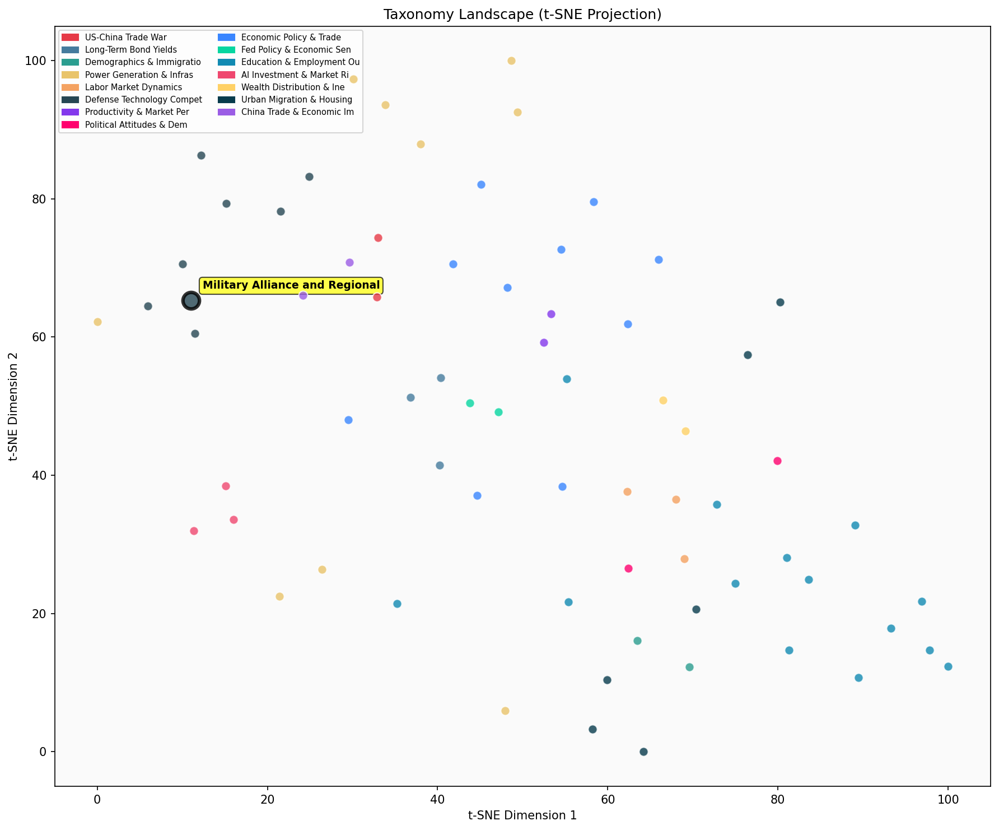

Description
This subcluster examines military partnerships, regional defense posturing, and strategic alliance formation in response to great power competition, particularly in the Indo-Pacific theater. Articles predominantly feature defense officials' statements, military procurement announcements, and strategic policy shifts from traditional defense frameworks. Coverage emphasizes Japan's constitutional defense transformation, US command structure evolution, and China's military infrastructure development. Unlike sibling subclusters focusing on semiconductor trade mechanics or aggregate defense spending analysis, this group centers on geopolitical military positioning, operational command integration, and alliance-building strategies that reshape regional security architectures through concrete military asset deployment and diplomatic defense agreements.
Similarity to All 70 Subclusters
Each cell represents a subcluster. Color intensity shows similarity (blue=low, red=high). Black line marks current subcluster position.
Relationship to Primary Clusters
Average similarity to each of the 15 primary clusters. Larger area = stronger relationship to that cluster.
Taxonomy Landscape
All 70 subclusters positioned by similarity (t-SNE). Current subcluster highlighted with label. Click to enlarge.
Network Connections
Current subcluster at center, connected to related subclusters. Line thickness = similarity strength.
Most Representative Articles
-
1. Scraping its "pacifist" post-Second World War defense strategy, Japan plans to spend $313B over the
-
2. The US and Japanese armed forces have "seen exponential increases…just over the past year” in their
-
3. The United States plans to deploy 100-200 troops in Taiwan to expand military training programs, up
-
4. Taiwan is likely to make a $15B request including 400 Patriot missiles, Aegis systems, and 60 F-35s.
-
5. The Chinese are seeking to deploy 1,500 nuclear weapons by 2035 and have doubled their intelligence,
Edge Cases (Boundary Articles)
-
1. Vietnam will displace Britain as one of the US’s top seven trading partners. Vietnam’s share of US gThis article is borderline because while it mentions Vietnam and US trade relationships in the context of the Indo-Pacific region, it focuses purely on economic trade statistics rather than military partnerships, defense strategies, or alliance formation. The content about trade volumes and percentages has no direct connection to military alliance discussions, making it much better suited for the "China Trade Surplus & Export Growth" cluster which directly addresses economic trade relationships.
-
2. Two Aegis-equipped Japanese destroyers successfully intercepted mock ballistic missiles during testsThis article is borderline because while it mentions Japanese naval capabilities which relates to regional defense strategy, the primary focus is on specific naval hardware (Aegis destroyers) and missile interception technology rather than broader alliance dynamics or strategic partnerships. The content is more about Japan's individual military capabilities and naval fleet expansion than about collaborative defense strategies or alliance formation with regional partners.
-
3. Vietnam has upgraded its relationship with the United States to the level previously reserved for ChThis article is borderline because while it mentions Vietnam's strategic relationship upgrade in the context of great power dynamics and regional positioning, it lacks specific discussion of military partnerships, defense agreements, or alliance structures that would clearly place it in the military alliance cluster. The article focuses more on diplomatic relationship levels and geopolitical balancing rather than concrete defense strategy or military cooperation elements.
Original Dendrogram